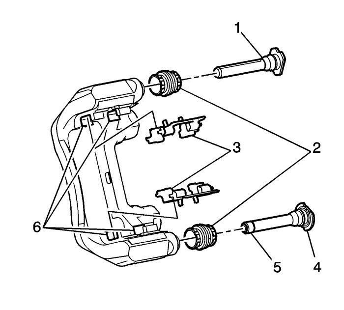

Revisión del herraje y soporte del freno de disco trasero
Advertencia: Consulte Advertencia relacionada con el polvo procedente de los frenos en la sección Prólogo.
Advertencia: Consulte Advertencia de líquido de frenos irritante en la sección Prólogo.

- Monte una abrazadera en C grande sobre el cuerpo de la pinza de freno, con los extremos de la abrazadera apoyados contra la parte trasera del cuerpo de la pinza y la pastilla de freno exterior.
Atención: Cuando utilice una abrazadera en C grande para insertar un pistón en el orificio de una pinza, si la pinza está equipada con mecanismo de freno de estacionamiento integrado, no sobrepase más de 1 mm (0,039 pulg.) de carrera del pistón. Si sobrepasa la carrera del pistón en dicha magnitud, se producirán daños en el mecanismo de ajuste interno y/o en el mecanismo del freno de estacionamiento integrado.
- Apriete la abrazadera en C sólo lo suficiente como para comprimir el pistón de la pinza sólo 1 mm (0,039 pulg.) de carrera.
- Extraiga la abrazadera en forma de C de la pinza.
- Agarre la pinza de freno e intente moverla verticalmente. La pinza de freno no debería estar excesivamente floja.
- Sin desconectar el latiguillo de freno hidráulico, desmonte la pinza de su soporte y apoye la pinza. Consultar Sustitución de la pinza de freno trasero .
- Compruebe los tornillos de la pinza para asegurarse de que no están doblados o dañados. Si los tornillos están doblados o dañados, es necesario sustituirlos.

- Asegúrese de que las pastillas de freno están firmemente sujetas en el soporte de montaje de la pinza de freno, pero que se deslizan fácilmente sobre los elementos de montaje (3) sin agarrotarse.
- Compruebe si los elementos de montaje de las pastillas de freno, las fijaciones de las pastillas (3), presentan lo siguiente:
| • | Lengüetas de soporte torcidas |
| • | El soporte de fijación de la pinza de freno está suelto. |
| • | Desgaste excesivo u holgura en las pastillas de freno |
| • | Falta de herraje de soporte |
- Si se encuentra cualquiera de las anomalías citadas, habrá que cambiar el herraje de soporte de las pastillas de freno de disco.
- Compruebe los pasadores guía (1, 4) de la pinza de freno empujando suavemente hacia dentro, sin desenclavar las correderas de los fuelles, luego tire hacia fuera y observe si hay:
| • | Movimiento limitado del pasador guía de la pinza |
| • | Fundas rotas o desgarradas (2) |
| • | El soporte de fijación de la pinza de freno está suelto |
| • | Pasadores guía de la pinza agarrotados u obstruidos |
- Si se detecta alguno de los problemas mencionados, es necesario sustituir los elementos de fijación y montaje de la pinza de freno.
- Compruebe si el soporte de montaje de la pinza de freno está doblado, agrietado o dañado.
- Si se detecta alguno de los problemas mencionados, es necesario sustituir el soporte de montaje de la pinza de freno.
| © Copyright Chevrolet Europe. All rights reserved |